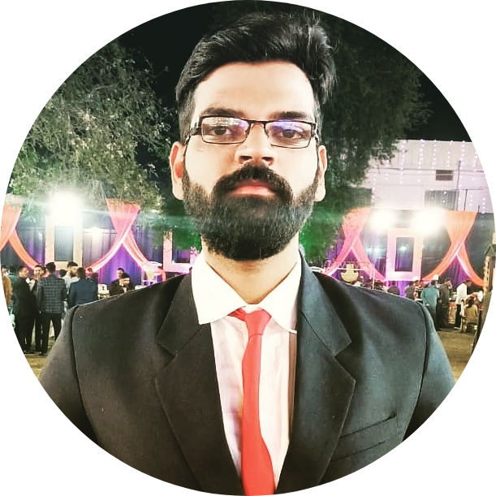

|  |
Shivam SamaiyaOperations and Growth Intern, Concis M.E Manufacturing Systems BITS Pilani,Pilani Campus B.Tech Mechanical Engineering PDPM IIITDM Jabalpur |
Area of interest includes supply chain management, lean six sigma implementations, Operations management, python, data analysis. Learning to play soulful solos on guitars and ukuleles(becoming pretty good at it :) ) Passionate about operations and strategy management. That sums up me.
| Year | Degree | Specialization | College |
|---|---|---|---|
| 2019-2021 | Master's of Engineering | Manufacturing Systems and Engineering | BITS Pilani |
| 2015-2019 | Bachelors of Technology | Mechanical Engineering | PDPM IIITDM Jabalpur |
| 2012-2014 | Matriculation | Maths Science | SMITA Children Academy |
| Data analysis using Excel | 🌟🌟🌟 | Lean Operations | 🌟🌟🌟 |
| Data analysis using Minitab | 🌟🌟🌟🌟 | Six Sigma methodology | 🌟🌟🌟 |
| HTML | 🌟🌟🌟 | Tableau | 🌟 |
| Python | 🌟🌟 |